CMHEF vs CMDEF exp 3-6, old
Last updated: 2026-07-21
Checks: 7 0
Knit directory: CMHEF vs CMDEF/
This reproducible R Markdown analysis was created with workflowr (version 1.7.2). The Checks tab describes the reproducibility checks that were applied when the results were created. The Past versions tab lists the development history.
Great! Since the R Markdown file has been committed to the Git repository, you know the exact version of the code that produced these results.
Great job! The global environment was empty. Objects defined in the global environment can affect the analysis in your R Markdown file in unknown ways. For reproduciblity it’s best to always run the code in an empty environment.
The command set.seed(20260716) was run prior to running
the code in the R Markdown file. Setting a seed ensures that any results
that rely on randomness, e.g. subsampling or permutations, are
reproducible.
Great job! Recording the operating system, R version, and package versions is critical for reproducibility.
Nice! There were no cached chunks for this analysis, so you can be confident that you successfully produced the results during this run.
Great job! Using relative paths to the files within your workflowr project makes it easier to run your code on other machines.
Great! You are using Git for version control. Tracking code development and connecting the code version to the results is critical for reproducibility.
The results in this page were generated with repository version 70f7ca5. See the Past versions tab to see a history of the changes made to the R Markdown and HTML files.
Note that you need to be careful to ensure that all relevant files for
the analysis have been committed to Git prior to generating the results
(you can use wflow_publish or
wflow_git_commit). workflowr only checks the R Markdown
file, but you know if there are other scripts or data files that it
depends on. Below is the status of the Git repository when the results
were generated:
Ignored files:
Ignored: .RData
Ignored: .Rhistory
Ignored: .Rproj.user/
Untracked files:
Untracked: CMHEF-vs-CMDEF-exp3-6,-old.Rmd
Untracked: analysis/3 vs 4 combined.Rmd
Untracked: analysis/CMHEF vs CMDEF trying new QCs.Rmd
Untracked: analysis/DEA.Rmd
Untracked: analysis/Second Cycle QC.Rmd
Untracked: analysis/snRNAseq CMHEF vs CMDEF.Rmd
Untracked: analysis/snRNAseq analysis exp3 diseased.Rmd
Untracked: analysis/snRNAseq analysis exp4 diseased.Rmd
Untracked: analysis/snRNAseq analysis exp4 healthy.Rmd
Untracked: figure/
Untracked: renv.lock
Untracked: renv/
Unstaged changes:
Modified: .Rprofile
Modified: .gitignore
Note that any generated files, e.g. HTML, png, CSS, etc., are not included in this status report because it is ok for generated content to have uncommitted changes.
These are the previous versions of the repository in which changes were
made to the R Markdown
(analysis/CMHEF_vs_CMDEF_exp3_6__first_QC.Rmd) and HTML
(docs/CMHEF_vs_CMDEF_exp3_6__first_QC.html) files. If
you’ve configured a remote Git repository (see
?wflow_git_remote), click on the hyperlinks in the table
below to view the files as they were in that past version.
| File | Version | Author | Date | Message |
|---|---|---|---|---|
| Rmd | 70f7ca5 | ellenkossmann | 2026-07-21 | Complete initial snRNA-seq QC and save clustered Seurat checkpoint |
Setup
Read in and prepare Datasets
# Sample 3 healthy
Exp3_CMHEF_NC <- here("data", "cellbender_output_Exp3_CMHEF_NC_filtered.h5")
counts_3H <- Read_CellBender_h5_Mat(file_name = Exp3_CMHEF_NC)
preQC_3H <- CreateSeuratObject(counts = counts_3H, project = "Exp3_CMHEF_NC")
# Sample 3 diseased
Exp3_CMDEF_NC <- here("data", "cellbender_output_Exp3_CMDEF_NC_filtered.h5")
counts_3D <- Read_CellBender_h5_Mat(file_name = Exp3_CMDEF_NC)
preQC_3D <- CreateSeuratObject(counts = counts_3D, project = "Exp3_CMDEF_NC")
# Sample 4 healthy
Exp4_CMHEF_NC <- here("data","cellbender_output_Exp4_CMHEF_NC_filtered.h5")
counts_4H <- Read_CellBender_h5_Mat(file_name = Exp4_CMHEF_NC)
preQC_4H <- CreateSeuratObject(counts = counts_4H, project = "Exp4_CMHEF_NC")
# Sample 4 diseased
Exp4_CMDEF_NC <- here("data","cellbender_output_Exp4_CMDEF_NC_filtered.h5")
counts_4D <- Read_CellBender_h5_Mat(file_name = Exp4_CMDEF_NC)
preQC_4D <- CreateSeuratObject(counts = counts_4D,project = "Exp4_CMDEF_NC")
#sample 5 healthy
Exp5_CMHEF_NC <- here("data","cellbender_output_Exp5_CMHEF_NC_filtered.h5")
counts_5H <- Read_CellBender_h5_Mat(file_name = Exp5_CMHEF_NC)
preQC_5H <- CreateSeuratObject(counts = counts_5H,project = "Exp5_CMHEF_NC")
#sample 5 diseased
Exp5_CMDEF_NC <- here("data","cellbender_output_Exp5_CMDEF_NC_filtered.h5")
counts_5D <- Read_CellBender_h5_Mat(file_name = Exp5_CMDEF_NC)
preQC_5D <- CreateSeuratObject(counts = counts_5D,project = "Exp5_CMDEF_NC")
#sample 6 healthy
Exp6_CMHEF_NC <- here("data","cellbender_output_Exp6_CMHEF_NC_filtered.h5")
counts_6H <- Read_CellBender_h5_Mat(file_name = Exp6_CMHEF_NC)
preQC_6H <- CreateSeuratObject(counts = counts_6H,project = "Exp6_CMHEF_NC")
#sample 6 diseased
Exp6_CMDEF_NC <- here("data","cellbender_output_Exp6_CMDEF_NC_filtered.h5")
counts_6D <- Read_CellBender_h5_Mat(file_name = Exp6_CMDEF_NC)
preQC_6D <- CreateSeuratObject(counts = counts_6D,project = "Exp6_CMDEF_NC")# Sample and condition metadata
preQC_3H$sample <- "Exp3_CMHEF_NC"
preQC_3H$condition <- "healthy"
preQC_3D$sample <- "Exp3_CMDEF_NC"
preQC_3D$condition <- "diseased"
preQC_4H$sample <- "Exp4_CMHEF_NC"
preQC_4H$condition <- "healthy"
preQC_4D$sample <- "Exp4_CMDEF_NC"
preQC_4D$condition <- "diseased"
preQC_5H$sample <- "Exp5_CMHEF_NC"
preQC_5H$condition <- "healthy"
preQC_5D$sample <- "Exp5_CMDEF_NC"
preQC_5D$condition <- "diseased"
preQC_6H$sample <- "Exp6_CMHEF_NC"
preQC_6H$condition <- "healthy"
preQC_6D$sample <- "Exp6_CMDEF_NC"
preQC_6D$condition <- "diseased"
# Biological replicate metadata
preQC_3H$replicate <- "Exp3"
preQC_3D$replicate <- "Exp3"
preQC_4H$replicate <- "Exp4"
preQC_4D$replicate <- "Exp4"
preQC_5H$replicate <- "Exp5"
preQC_5D$replicate <- "Exp5"
preQC_6H$replicate <- "Exp6"
preQC_6D$replicate <- "Exp6"PreQC Plots
# Add mitochondrial percentage to all samples
preQC_3H[["percent.mt"]] <- PercentageFeatureSet(preQC_3H, pattern = "^MT-")
preQC_3D[["percent.mt"]] <- PercentageFeatureSet(preQC_3D, pattern = "^MT-")
preQC_4H[["percent.mt"]] <- PercentageFeatureSet(preQC_4H, pattern = "^MT-")
preQC_4D[["percent.mt"]] <- PercentageFeatureSet(preQC_4D, pattern = "^MT-")
preQC_5H[["percent.mt"]] <- PercentageFeatureSet(preQC_5H, pattern = "^MT-")
preQC_5D[["percent.mt"]] <- PercentageFeatureSet(preQC_5D, pattern = "^MT-")
preQC_6H[["percent.mt"]] <- PercentageFeatureSet(preQC_6H, pattern = "^MT-")
preQC_6D[["percent.mt"]] <- PercentageFeatureSet(preQC_6D, pattern = "^MT-")
# Add ribosomal protein percentage to all samples
preQC_3H[["percent.rp"]] <- PercentageFeatureSet(preQC_3H, pattern = "^RP[SL]")
preQC_3D[["percent.rp"]] <- PercentageFeatureSet(preQC_3D, pattern = "^RP[SL]")
preQC_4H[["percent.rp"]] <- PercentageFeatureSet(preQC_4H, pattern = "^RP[SL]")
preQC_4D[["percent.rp"]] <- PercentageFeatureSet(preQC_4D, pattern = "^RP[SL]")
preQC_5H[["percent.rp"]] <- PercentageFeatureSet(preQC_5H, pattern = "^RP[SL]")
preQC_5D[["percent.rp"]] <- PercentageFeatureSet(preQC_5D, pattern = "^RP[SL]")
preQC_6H[["percent.rp"]] <- PercentageFeatureSet(preQC_6H, pattern = "^RP[SL]")
preQC_6D[["percent.rp"]] <- PercentageFeatureSet(preQC_6D, pattern = "^RP[SL]")
# Merge all samples for QC visualization
qc_combined <- merge(
preQC_3H,
y = list(
preQC_3D,
preQC_4H,
preQC_4D,
preQC_5H,
preQC_5D,
preQC_6H,
preQC_6D
),
add.cell.ids = c(
"Exp3H",
"Exp3D",
"Exp4H",
"Exp4D",
"Exp5H",
"Exp5D",
"Exp6H",
"Exp6D"
),
project = "QC_compare"
)
# Add abbreviated sample names
qc_combined$sample_short <- dplyr::recode(
qc_combined$sample,
"Exp3_CMHEF_NC" = "3H",
"Exp3_CMDEF_NC" = "3D",
"Exp4_CMHEF_NC" = "4H",
"Exp4_CMDEF_NC" = "4D",
"Exp5_CMHEF_NC" = "5H",
"Exp5_CMDEF_NC" = "5D",
"Exp6_CMHEF_NC" = "6H",
"Exp6_CMDEF_NC" = "6D"
)
# Plot number of detected genes per nucleus
VlnPlot(
qc_combined,
features = "nFeature_RNA",
group.by = "sample",
pt.size = 0,
ncol = 3
) +
NoLegend() +
ggtitle("nFeature_RNA") +
theme(
axis.text.x = element_text(
angle = 45,
hjust = 1,
vjust = 1
),
plot.margin = margin(
t = 5,
r = 5,
b = 50,
l = 5
)
)Warning: Default search for "data" layer in "RNA" assay yielded no results;
utilizing "counts" layer instead.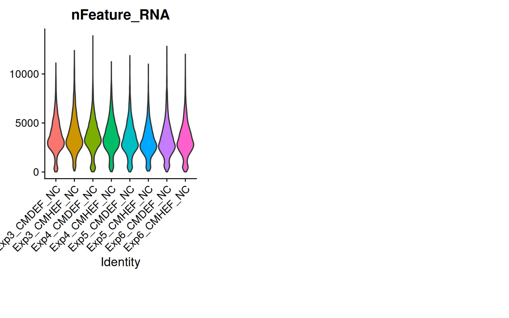
# Plot total RNA counts per nucleus
VlnPlot(
qc_combined,
features = "nCount_RNA",
group.by = "sample",
pt.size = 0,
ncol = 3
) +
NoLegend() +
ggtitle("nCount_RNA") +
theme(
axis.text.x = element_text(
angle = 45,
hjust = 1,
vjust = 1
),
plot.margin = margin(
t = 5,
r = 5,
b = 50,
l = 5
)
)Warning: Default search for "data" layer in "RNA" assay yielded no results;
utilizing "counts" layer instead.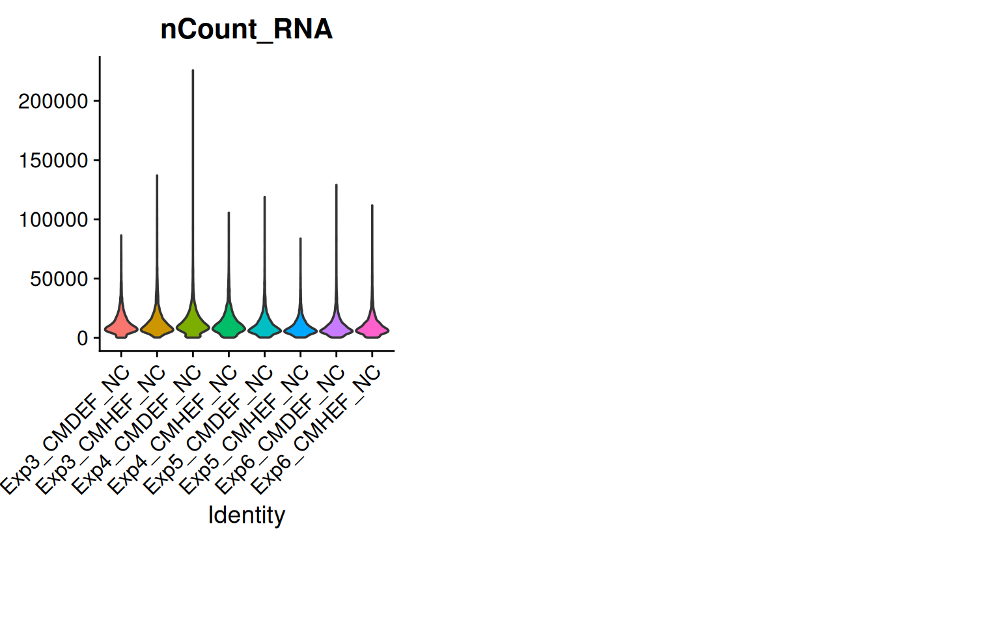
# Plot mitochondrial percentage
VlnPlot(
qc_combined,
features = "percent.mt",
group.by = "sample",
pt.size = 0,
ncol = 3
) +
NoLegend() +
ggtitle("percent.mt") +
theme(
axis.text.x = element_text(
angle = 45,
hjust = 1,
vjust = 1
),
plot.margin = margin(
t = 10,
r = 10,
b = 20,
l = 40
)
)Warning: Default search for "data" layer in "RNA" assay yielded no results;
utilizing "counts" layer instead.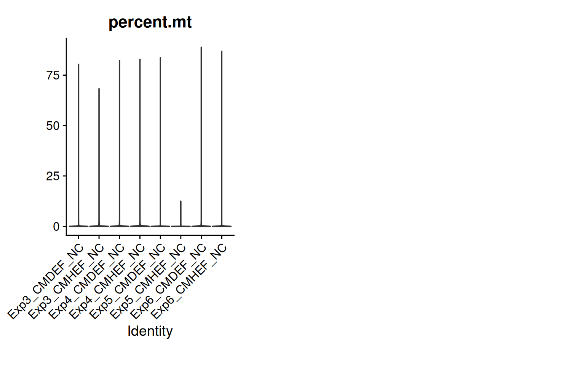
# Plot ribosomal protein percentage
VlnPlot(
qc_combined,
features = "percent.rp",
group.by = "sample",
pt.size = 0,
ncol = 3
) +
NoLegend() +
ggtitle("percent.rp") +
theme(
axis.text.x = element_text(
angle = 45,
hjust = 1,
vjust = 1
),
plot.margin = margin(
t = 10,
r = 10,
b = 20,
l = 40
)
)Warning: Default search for "data" layer in "RNA" assay yielded no results;
utilizing "counts" layer instead.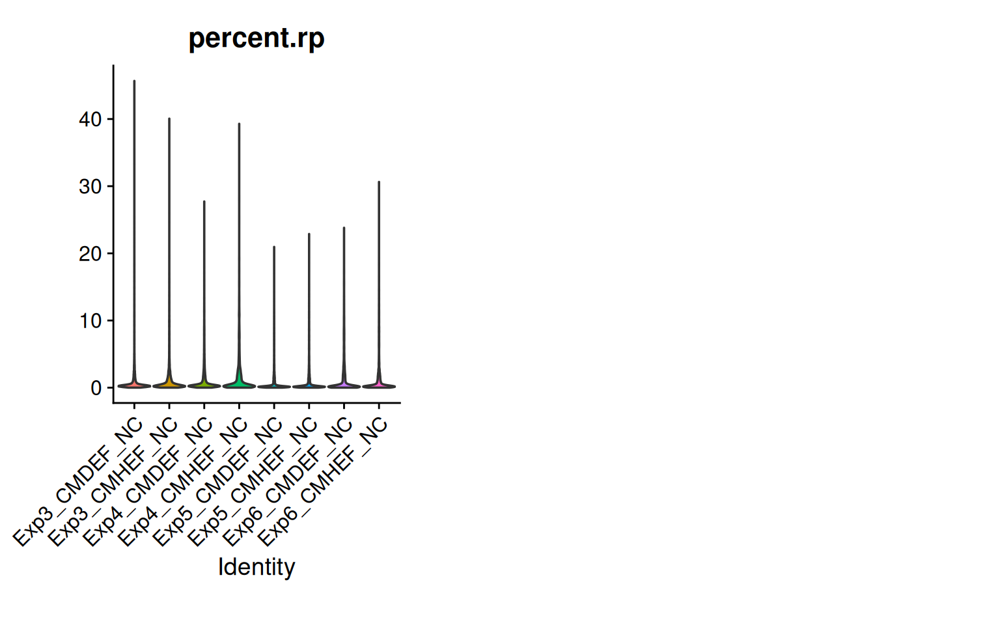
Doublet Removal
# Doublet removal
sample_list <- list(
Exp3_CMHEF_NC = preQC_3H,
Exp3_CMDEF_NC = preQC_3D,
Exp4_CMHEF_NC = preQC_4H,
Exp4_CMDEF_NC = preQC_4D,
Exp5_CMHEF_NC = preQC_5H,
Exp5_CMDEF_NC = preQC_5D,
Exp6_CMHEF_NC = preQC_6H,
Exp6_CMDEF_NC = preQC_6D
)
# Run scDblFinder separately for each sample
for (nm in names(sample_list)) {
sce_obj <- as.SingleCellExperiment(sample_list[[nm]])
set.seed(123)
sce_obj <- scDblFinder(
sce_obj,
clusters = TRUE
)
sample_list[[nm]]$scDblFinder.class <-
sce_obj$scDblFinder.class
sample_list[[nm]]$scDblFinder.score <-
sce_obj$scDblFinder.score
}Warning: Layer 'data' is emptyWarning: Layer 'scale.data' is emptyClustering cells...9 clustersCreating ~4680 artificial doublets...Dimensional reductionEvaluating kNN...Training model...iter=0, 475 cells excluded from training.iter=1, 536 cells excluded from training.iter=2, 584 cells excluded from training.Threshold found:0.796590 (10.1%) doublets calledWarning: Layer 'data' is empty
Layer 'scale.data' is emptyWarning in .checkSCE(sce, coerce = is.null(samples)): Some cells in `sce` have
an extremely low read counts; note that these could trigger errors and might
best be filtered outClustering cells...10 clustersCreating ~5778 artificial doublets...Dimensional reductionEvaluating kNN...Training model...iter=0, 675 cells excluded from training.iter=1, 727 cells excluded from training.iter=2, 741 cells excluded from training.Threshold found:0.736804 (11.1%) doublets calledWarning: Layer 'data' is emptyWarning: Layer 'scale.data' is emptyWarning in .checkSCE(sce, coerce = is.null(samples)): Some cells in `sce` have
an extremely low read counts; note that these could trigger errors and might
best be filtered outClustering cells...9 clustersCreating ~2916 artificial doublets...Dimensional reductionEvaluating kNN...Training model...iter=0, 214 cells excluded from training.iter=1, 298 cells excluded from training.iter=2, 235 cells excluded from training.Threshold found:0.837257 (7.1%) doublets calledWarning: Layer 'data' is emptyWarning: Layer 'scale.data' is emptyWarning in .checkSCE(sce, coerce = is.null(samples)): Some cells in `sce` have
an extremely low read counts; note that these could trigger errors and might
best be filtered outClustering cells...11 clustersCreating ~4732 artificial doublets...Dimensional reductionEvaluating kNN...Training model...iter=0, 512 cells excluded from training.iter=1, 531 cells excluded from training.iter=2, 549 cells excluded from training.Threshold found:0.76582 (9.8%) doublets calledWarning: Layer 'data' is emptyWarning: Layer 'scale.data' is emptyClustering cells...9 clustersCreating ~4139 artificial doublets...Dimensional reductionEvaluating kNN...Training model...iter=0, 390 cells excluded from training.iter=1, 459 cells excluded from training.iter=2, 413 cells excluded from training.Threshold found:0.769448 (8.7%) doublets calledWarning: Layer 'data' is empty
Layer 'scale.data' is emptyClustering cells...11 clustersCreating ~4676 artificial doublets...Dimensional reductionEvaluating kNN...Training model...iter=0, 467 cells excluded from training.iter=1, 517 cells excluded from training.iter=2, 553 cells excluded from training.Threshold found:0.774576 (9.9%) doublets calledWarning: Layer 'data' is empty
Layer 'scale.data' is emptyClustering cells...8 clustersCreating ~4432 artificial doublets...Dimensional reductionEvaluating kNN...Training model...iter=0, 431 cells excluded from training.iter=1, 462 cells excluded from training.iter=2, 483 cells excluded from training.Threshold found:0.721502 (9.1%) doublets calledWarning: Layer 'data' is empty
Layer 'scale.data' is emptyClustering cells...9 clustersCreating ~4308 artificial doublets...Dimensional reductionEvaluating kNN...Training model...iter=0, 415 cells excluded from training.iter=1, 442 cells excluded from training.iter=2, 451 cells excluded from training.Threshold found:0.785460 (8.5%) doublets called# Merge all samples before doublet removal
preQC_combined <- merge(
x = sample_list[[1]],
y = sample_list[-1],
add.cell.ids = names(sample_list),
project = "preQC_combined"
)
# Set the order of doublet classifications
preQC_combined$scDblFinder.class <- factor(
preQC_combined$scDblFinder.class,
levels = c("singlet", "doublet")
)
# Compare QC metrics between singlets and doublets
VlnPlot(
preQC_combined,
features = c(
"nCount_RNA",
"nFeature_RNA",
"percent.mt"
),
group.by = "sample",
split.by = "scDblFinder.class",
layer = "counts",
pt.size = 0,
ncol = 3
) & theme(
legend.position = "right",
axis.text.x = element_text(
angle = 45,
hjust = 1
)
)The default behaviour of split.by has changed.
Separate violin plots are now plotted side-by-side.
To restore the old behaviour of a single split violin,
set split.plot = TRUE.
This message will be shown once per session.
# Retain only nuclei classified as singlets
sample_list_nodoublets <- lapply(
sample_list,
function(x) {
subset(
x = x,
subset = scDblFinder.class == "singlet"
)
}
)
# Merge all samples after doublet removal
preQC_nodoublets_combined <- merge(
x = sample_list_nodoublets[[1]],
y = sample_list_nodoublets[-1],
add.cell.ids = names(sample_list_nodoublets),
project = "preQC_nodoublets_combined"
)
# Visualize QC metrics after doublet removal
VlnPlot(
preQC_nodoublets_combined,
features = c(
"nFeature_RNA",
"nCount_RNA",
"percent.mt"
),
group.by = "sample",
layer = "counts",
pt.size = 0,
ncol = 3
) & theme(
axis.text.x = element_text(
angle = 45,
hjust = 1
)
)
# Display doublet classifications for each sample
lapply(
sample_list,
function(x) {
table(x$scDblFinder.class)
}
)$Exp3_CMHEF_NC
singlet doublet
5260 590
$Exp3_CMDEF_NC
singlet doublet
6418 804
$Exp4_CMHEF_NC
singlet doublet
3388 257
$Exp4_CMDEF_NC
singlet doublet
5332 582
$Exp5_CMHEF_NC
singlet doublet
4725 448
$Exp5_CMDEF_NC
singlet doublet
5269 576
$Exp6_CMHEF_NC
singlet doublet
5038 502
$Exp6_CMDEF_NC
singlet doublet
4924 460 # Create a summary table of singlets and doublets
doublet_table <- do.call(
rbind,
lapply(
names(sample_list),
function(nm) {
tab <- table(
sample_list[[nm]]$scDblFinder.class
)
singlet_count <- if (
"singlet" %in% names(tab)
) {
as.numeric(tab["singlet"])
} else {
0
}
doublet_count <- if (
"doublet" %in% names(tab)
) {
as.numeric(tab["doublet"])
} else {
0
}
total_count <- sum(tab)
data.frame(
Sample = nm,
Singlet = singlet_count,
Doublet = doublet_count,
Total = total_count,
Doublet_percent = round(
100 * doublet_count / total_count,
1
)
)
}
)
)
# View doublet summary
doublet_table Sample Singlet Doublet Total Doublet_percent
1 Exp3_CMHEF_NC 5260 590 5850 10.1
2 Exp3_CMDEF_NC 6418 804 7222 11.1
3 Exp4_CMHEF_NC 3388 257 3645 7.1
4 Exp4_CMDEF_NC 5332 582 5914 9.8
5 Exp5_CMHEF_NC 4725 448 5173 8.7
6 Exp5_CMDEF_NC 5269 576 5845 9.9
7 Exp6_CMHEF_NC 5038 502 5540 9.1
8 Exp6_CMDEF_NC 4924 460 5384 8.5#some checks after doublet removal to be sure that the seurat objects are correct
lapply(sample_list, function(x) table(x$scDblFinder.class))$Exp3_CMHEF_NC
singlet doublet
5260 590
$Exp3_CMDEF_NC
singlet doublet
6418 804
$Exp4_CMHEF_NC
singlet doublet
3388 257
$Exp4_CMDEF_NC
singlet doublet
5332 582
$Exp5_CMHEF_NC
singlet doublet
4725 448
$Exp5_CMDEF_NC
singlet doublet
5269 576
$Exp6_CMHEF_NC
singlet doublet
5038 502
$Exp6_CMDEF_NC
singlet doublet
4924 460 lapply(sample_list_nodoublets, function(x) table(x$scDblFinder.class))$Exp3_CMHEF_NC
singlet doublet
5260 0
$Exp3_CMDEF_NC
singlet doublet
6418 0
$Exp4_CMHEF_NC
singlet doublet
3388 0
$Exp4_CMDEF_NC
singlet doublet
5332 0
$Exp5_CMHEF_NC
singlet doublet
4725 0
$Exp5_CMDEF_NC
singlet doublet
5269 0
$Exp6_CMHEF_NC
singlet doublet
5038 0
$Exp6_CMDEF_NC
singlet doublet
4924 0 sapply(sample_list, ncol)Exp3_CMHEF_NC Exp3_CMDEF_NC Exp4_CMHEF_NC Exp4_CMDEF_NC Exp5_CMHEF_NC
5850 7222 3645 5914 5173
Exp5_CMDEF_NC Exp6_CMHEF_NC Exp6_CMDEF_NC
5845 5540 5384 sapply(sample_list_nodoublets, ncol)Exp3_CMHEF_NC Exp3_CMDEF_NC Exp4_CMHEF_NC Exp4_CMDEF_NC Exp5_CMHEF_NC
5260 6418 3388 5332 4725
Exp5_CMDEF_NC Exp6_CMHEF_NC Exp6_CMDEF_NC
5269 5038 4924 PostQC plots
#use QC parameters as when I looked at the samples on their own as I did before
postQC_3H <- subset(sample_list_nodoublets$Exp3_CMHEF_NC, subset = nFeature_RNA > 600 & percent.mt < 3)
postQC_3D <- subset(sample_list_nodoublets$Exp3_CMDEF_NC, subset = nFeature_RNA > 800 & percent.mt < 3)
postQC_4H <- subset(sample_list_nodoublets$Exp4_CMHEF_NC, subset = nFeature_RNA > 800 & percent.mt < 3)
postQC_4D <- subset(sample_list_nodoublets$Exp4_CMDEF_NC, subset = nFeature_RNA > 900 & percent.mt < 3)
postQC_5H <- subset(sample_list_nodoublets$Exp5_CMHEF_NC, subset = nFeature_RNA > 800 & percent.mt < 3)
postQC_5D <- subset(sample_list_nodoublets$Exp5_CMDEF_NC, subset = nFeature_RNA > 800 & percent.mt < 3)
postQC_6H <- subset(sample_list_nodoublets$Exp6_CMHEF_NC, subset = nFeature_RNA > 800 & percent.mt < 3)
postQC_6D <- subset(sample_list_nodoublets$Exp6_CMDEF_NC, subset = nFeature_RNA > 800 & percent.mt < 3)
Post_QC_plot <- merge(
postQC_3H,
y = list(postQC_3D, postQC_4H, postQC_4D, postQC_5H, postQC_5D, postQC_6H, postQC_6D),
add.cell.ids = c("Exp3H", "Exp3D", "Exp4H", "Exp4D", "Exp5H", "Exp5D", "Exp6H", "Exp6D"),
project = "Post_QC"
)
VlnPlot(
Post_QC_plot,
features = c("nFeature_RNA", "nCount_RNA", "percent.mt", "percent.rp"),
group.by = "sample",
ncol = 4,
pt.size = 0
) & theme(
axis.text.x = element_text(angle = 45, hjust = 1)
)Warning: Default search for "data" layer in "RNA" assay yielded no results;
utilizing "counts" layer instead.
Normalization
#normalize, each sample individually, and new seed
set.seed(124)
# normalization (per sample, before Harmony)
options(future.globals.maxSize = 2 * 1024^3) # 2 GB
Norm_postQC_3H <- SCTransform(
postQC_3H,
assay = "RNA",
vst.flavor = "v2",
vars.to.regress = "percent.mt"
)Running SCTransform on assay: RNAvst.flavor='v2' set. Using model with fixed slope and excluding poisson genes.Calculating cell attributes from input UMI matrix: log_umiVariance stabilizing transformation of count matrix of size 25559 by 5100Model formula is y ~ log_umiGet Negative Binomial regression parameters per geneUsing 2000 genes, 5000 cellsFound 49 outliers - those will be ignored in fitting/regularization stepSecond step: Get residuals using fitted parameters for 25559 genesComputing corrected count matrix for 25559 genesCalculating gene attributesWall clock passed: Time difference of 27.07158 secsDetermine variable featuresRegressing out percent.mtCentering data matrixPlace corrected count matrix in counts slotSet default assay to SCTNorm_postQC_3D <- SCTransform(
postQC_3D,
assay = "RNA",
vst.flavor = "v2",
vars.to.regress = "percent.mt"
)Running SCTransform on assay: RNAvst.flavor='v2' set. Using model with fixed slope and excluding poisson genes.Calculating cell attributes from input UMI matrix: log_umiVariance stabilizing transformation of count matrix of size 25546 by 6019Model formula is y ~ log_umiGet Negative Binomial regression parameters per geneUsing 2000 genes, 5000 cellsFound 101 outliers - those will be ignored in fitting/regularization stepSecond step: Get residuals using fitted parameters for 25546 genesComputing corrected count matrix for 25546 genesCalculating gene attributesWall clock passed: Time difference of 27.73899 secsDetermine variable featuresRegressing out percent.mtCentering data matrixPlace corrected count matrix in counts slotSet default assay to SCTNorm_postQC_4H <- SCTransform(
postQC_4H,
assay = "RNA",
vst.flavor = "v2",
vars.to.regress = "percent.mt"
)Running SCTransform on assay: RNAvst.flavor='v2' set. Using model with fixed slope and excluding poisson genes.Calculating cell attributes from input UMI matrix: log_umiVariance stabilizing transformation of count matrix of size 24000 by 3175Model formula is y ~ log_umiGet Negative Binomial regression parameters per geneUsing 2000 genes, 3175 cellsFound 36 outliers - those will be ignored in fitting/regularization stepSecond step: Get residuals using fitted parameters for 24000 genesComputing corrected count matrix for 24000 genesCalculating gene attributesWall clock passed: Time difference of 15.74395 secsDetermine variable featuresRegressing out percent.mtCentering data matrixPlace corrected count matrix in counts slotSet default assay to SCTNorm_postQC_4D <- SCTransform(
postQC_4D,
assay = "RNA",
vst.flavor = "v2",
vars.to.regress = "percent.mt"
)Running SCTransform on assay: RNAvst.flavor='v2' set. Using model with fixed slope and excluding poisson genes.Calculating cell attributes from input UMI matrix: log_umiVariance stabilizing transformation of count matrix of size 25123 by 4876Model formula is y ~ log_umiGet Negative Binomial regression parameters per geneUsing 2000 genes, 4876 cellsFound 33 outliers - those will be ignored in fitting/regularization stepSecond step: Get residuals using fitted parameters for 25123 genesComputing corrected count matrix for 25123 genesCalculating gene attributesWall clock passed: Time difference of 23.11612 secsDetermine variable featuresRegressing out percent.mtCentering data matrixPlace corrected count matrix in counts slotSet default assay to SCTNorm_postQC_5H <- SCTransform(
postQC_5H,
assay = "RNA",
vst.flavor = "v2",
vars.to.regress = "percent.mt"
)Running SCTransform on assay: RNAvst.flavor='v2' set. Using model with fixed slope and excluding poisson genes.Calculating cell attributes from input UMI matrix: log_umiVariance stabilizing transformation of count matrix of size 24044 by 4394Model formula is y ~ log_umiGet Negative Binomial regression parameters per geneUsing 2000 genes, 4394 cellsFound 49 outliers - those will be ignored in fitting/regularization stepSecond step: Get residuals using fitted parameters for 24044 genesComputing corrected count matrix for 24044 genesCalculating gene attributesWall clock passed: Time difference of 20.41259 secsDetermine variable featuresRegressing out percent.mtCentering data matrixPlace corrected count matrix in counts slotSet default assay to SCTNorm_postQC_5D <- SCTransform(
postQC_5D,
assay = "RNA",
vst.flavor = "v2",
vars.to.regress = "percent.mt"
)Running SCTransform on assay: RNAvst.flavor='v2' set. Using model with fixed slope and excluding poisson genes.Calculating cell attributes from input UMI matrix: log_umiVariance stabilizing transformation of count matrix of size 24525 by 4882Model formula is y ~ log_umiGet Negative Binomial regression parameters per geneUsing 2000 genes, 4882 cellsFound 41 outliers - those will be ignored in fitting/regularization stepSecond step: Get residuals using fitted parameters for 24525 genesComputing corrected count matrix for 24525 genesCalculating gene attributesWall clock passed: Time difference of 22.70352 secsDetermine variable featuresRegressing out percent.mtCentering data matrixPlace corrected count matrix in counts slotSet default assay to SCTNorm_postQC_6H <- SCTransform(
postQC_6H,
assay = "RNA",
vst.flavor = "v2",
vars.to.regress = "percent.mt"
)Running SCTransform on assay: RNAvst.flavor='v2' set. Using model with fixed slope and excluding poisson genes.Calculating cell attributes from input UMI matrix: log_umiVariance stabilizing transformation of count matrix of size 24490 by 4609Model formula is y ~ log_umiGet Negative Binomial regression parameters per geneUsing 2000 genes, 4609 cellsFound 39 outliers - those will be ignored in fitting/regularization stepSecond step: Get residuals using fitted parameters for 24490 genesComputing corrected count matrix for 24490 genesCalculating gene attributesWall clock passed: Time difference of 21.32756 secsDetermine variable featuresRegressing out percent.mtCentering data matrixPlace corrected count matrix in counts slotSet default assay to SCTNorm_postQC_6D <- SCTransform(
postQC_6D,
assay = "RNA",
vst.flavor = "v2",
vars.to.regress = "percent.mt"
)Running SCTransform on assay: RNAvst.flavor='v2' set. Using model with fixed slope and excluding poisson genes.Calculating cell attributes from input UMI matrix: log_umiVariance stabilizing transformation of count matrix of size 24453 by 4559Model formula is y ~ log_umiGet Negative Binomial regression parameters per geneUsing 2000 genes, 4559 cellsFound 52 outliers - those will be ignored in fitting/regularization stepSecond step: Get residuals using fitted parameters for 24453 genesComputing corrected count matrix for 24453 genesCalculating gene attributesWall clock passed: Time difference of 21.6188 secsDetermine variable featuresRegressing out percent.mtCentering data matrixPlace corrected count matrix in counts slotSet default assay to SCT# Merge the SCT-normalized objects
Norm_Post_QC <- merge(
x = Norm_postQC_3H,
y = list(
Norm_postQC_3D,
Norm_postQC_4H,
Norm_postQC_4D,
Norm_postQC_5H,
Norm_postQC_5D,
Norm_postQC_6H,
Norm_postQC_6D
),
add.cell.ids = c("3H", "3D", "4H", "4D", "5H", "5D", "6H", "6D"),
project = "Post_QC"
)
# Use SCT assay for downstream PCA
DefaultAssay(Norm_Post_QC) <- "SCT"PCA
#linear dimensionality reduction
set.seed(125)
# choose one shared variable-feature set across the 8 SCT-normalized samples
features <- SelectIntegrationFeatures(
object.list = list(
Norm_postQC_3H,
Norm_postQC_3D,
Norm_postQC_4H,
Norm_postQC_4D,
Norm_postQC_5H,
Norm_postQC_5D,
Norm_postQC_6H,
Norm_postQC_6D
),
nfeatures = 3000
)
# assign those shared features to the merged object
VariableFeatures(Norm_Post_QC) <- features
# make sure PCA uses the SCT assay
DefaultAssay(Norm_Post_QC) <- "SCT"
# now run PCA
Norm_Post_QC <- RunPCA(
Norm_Post_QC,
features = VariableFeatures(Norm_Post_QC)
)PC_ 1
Positive: SLIT2, BRINP3, FHL2, KCNIP4, ANKRD1, MID1, SLC8A1, CACNB2, PCDH7, TECRL
CHRM2, FBN2, DMD, CTNNA3, KIF26B, EMC10, RYR2, FHOD3, TNNI3K, FGF12
TSHZ2, PRICKLE1, MYOM1, LRRTM4, MLIP, ERBB4, CMYA5, PALLD, ERC2, CORIN
Negative: COL3A1, COL1A2, COL6A3, COL1A1, FN1, EBF1, SPARC, COL6A1, COL6A2, IGFBP3
COL5A2, SULF1, PDGFRB, CCDC102B, TFPI, VIM, MEG8, POSTN, S100A6, VCAN
EPS8, PDE7B, S100A4, CSGALNACT1, IGFBP4, TGFBI, TRPS1, COL5A3, BNC2, FBN1
PC_ 2
Positive: COL1A1, COL1A2, COL3A1, COL6A1, MYL7, COL6A3, GAPDH, ACTC1, IGFBP3, COL6A2
ANKRD1, S100A4, H19, EEF1A1, RPLP1, TPT1, NPPA, MIF, PDGFRB, TNNC1
SULF1, RPL41, TNNI1, COL5A2, CD63, SERF2, NPPB, RPS8, CRYAB, MYL2
Negative: MECOM, CALCRL, DOCK4, TCF4, LDB2, ADGRL4, PLEKHG1, PECAM1, CASC15, EMCN
ELMO1, FLT1, RAPGEF5, ARHGEF28, CDH13, ERG, FLI1, RHOJ, APBB2, RASGRF2
RASGRP3, ADGRF5, NOX4, VWF, ANO2, GRB10, EFNB2, PRKCH, ADAMTS9, VAV3
PC_ 3
Positive: COL6A3, COL3A1, COL1A2, EBF1, CCDC102B, PDGFRB, TRPS1, COL1A1, PRKG1, SULF1
DLC1, COL6A2, COL5A2, FN1, MEG8, RUNX1, IGFBP3, COL6A1, EPS8, PDE3A
MEG3, GLIS3, VCAN, COL5A3, SOX5, PDGFRA, PLEKHH2, PRR16, CYP1B1, KCNE4
Negative: MYL7, ACTC1, TNNC1, NPPA, GAPDH, TNNI1, FABP3, MYL2, ATP5F1E, HSPB7
ATP5MC3, ANKRD1, HSPB1, CSRP3, RPLP1, UQCRB, CRYAB, COX7C, MIF, EEF1A1
NPPB, SLC25A4, SRP14, ACTA1, COX8A, KRT8, TPT1, RPS28, H19, RPL41
PC_ 4
Positive: DIAPH3, TOP2A, CENPF, ANLN, TPX2, ASPM, SMC4, MIR924HG, KIF20B, CIT
CENPE, NUSAP1, NUF2, BUB1, KIF18A, KNL1, BRIP1, ENSG00000290886, CEP128, APOLD1
KIF4A, BUB1B, POLQ, ECT2, KIF14, NDC80, NCAPG, PRC1, MKI67, DLGAP5
Negative: NPPB, MYOM1, LRRTM4, SLIT2, ADAMTS9-AS2, MYL3, ACTC1, GRB10, TTN, ENSG00000291159
CSRP3, PTCHD4, EGLN3, SGIP1, CNTN5, PGK1, HSPB7, TNNI1, SLC16A1, COL13A1
NAV3, VIPR2, DNAH11, DTNA, VWC2, BNIP3, HIF1A-AS3, TNNC1, MYL7, SLC25A4
PC_ 5
Positive: BRINP3, SLIT2, HTR4, GRAMD1B, COL14A1, ENSG00000282917, KIF26B, DLGAP1, EPHA4, PBX1
ADGRL2, MGAT4C, CNTN5, PLXNA4, CSMD1, NOS1AP, FHL2, MOXD1, ROR2, MAN1A1
KLHL32, DAB1, RAP1GAP2, IL1RAPL1, CDH12, CHRNA7, TECRL, FREM1, TRDN-AS1, RASSF8
Negative: ANKRD1, GBE1, LINC01411, PCDH7, MYOM1, CALD1, FLNB, LRRC8B, LRRFIP1, SLC16A1
KLF7, DTNA, SORBS1, MYOF, MID1, SAMD4A, IL1RAP, SV2C, STAT4, CYTOR
ENSG00000291159, DGKI, ROR1, NPPB, DDAH1, LIMS1, NEXN, COL13A1, PDLIM3, TNNI3K Visualize PCA
#visualizations of the PCA
VizDimLoadings(Norm_Post_QC, dims = 1:2, reduction = "pca")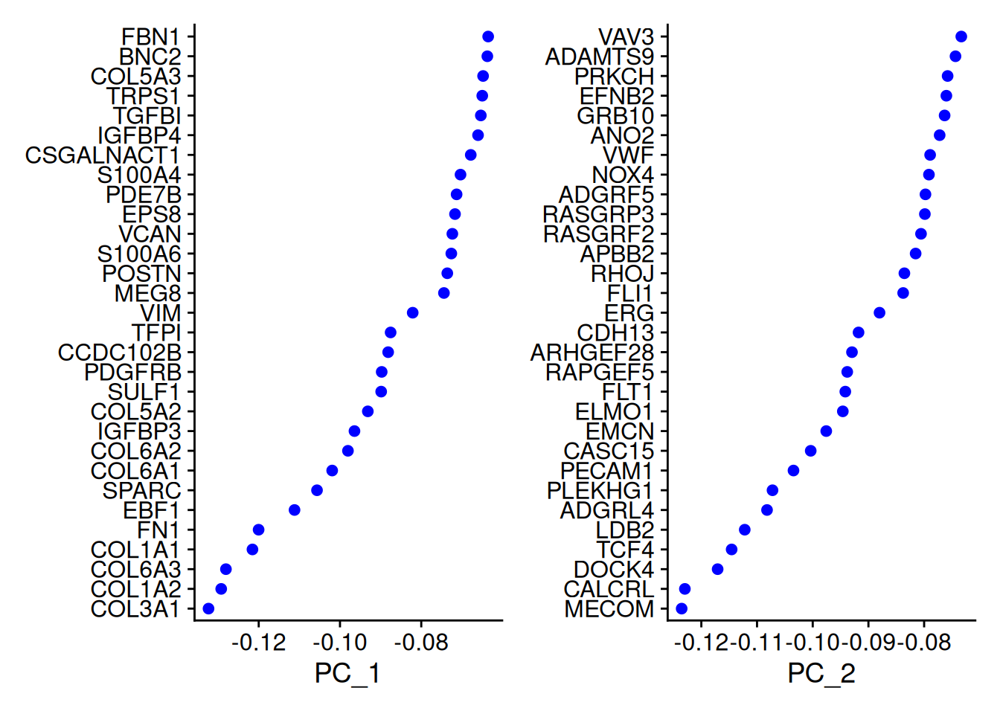
DimPlot(Norm_Post_QC, reduction = "pca") + NoLegend()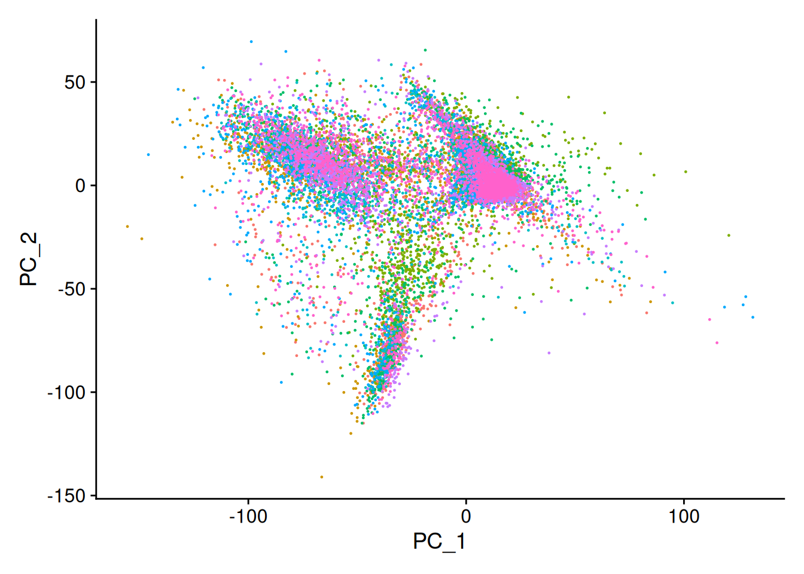
DimHeatmap(Norm_Post_QC, dims = 1, cells = 500, balanced = TRUE)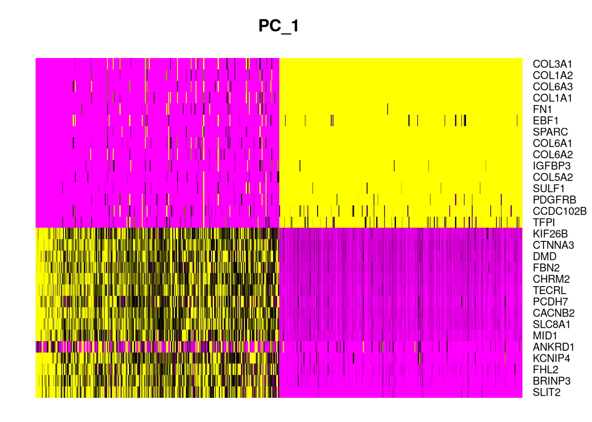
DimHeatmap(Norm_Post_QC, dims = 1:15, cells = 500, balanced = TRUE)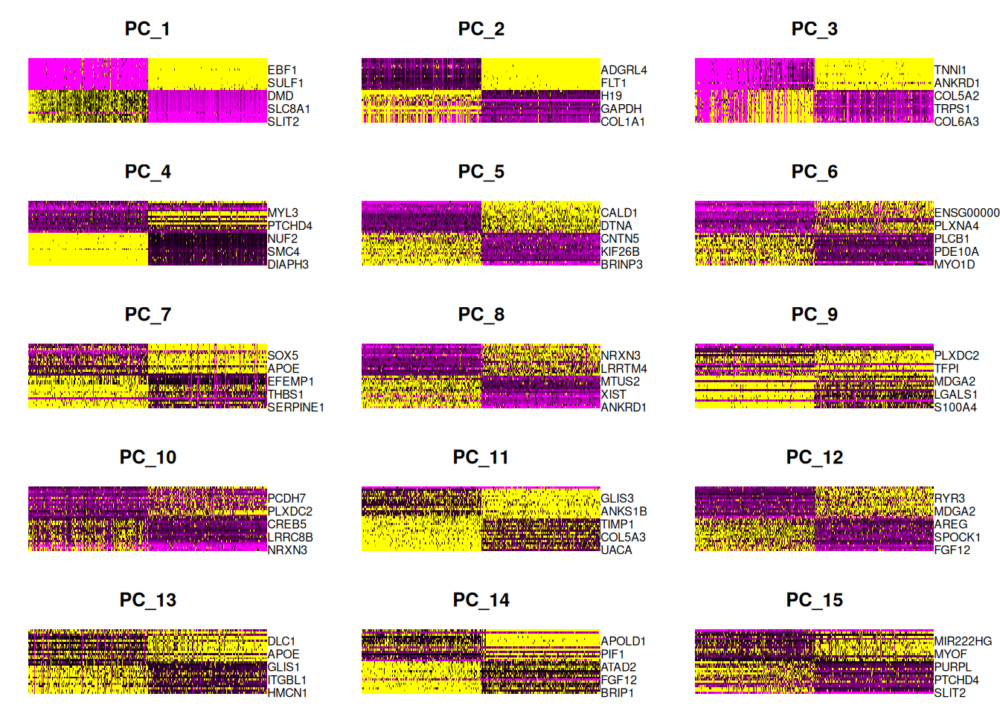
ElbowPlot(Norm_Post_QC)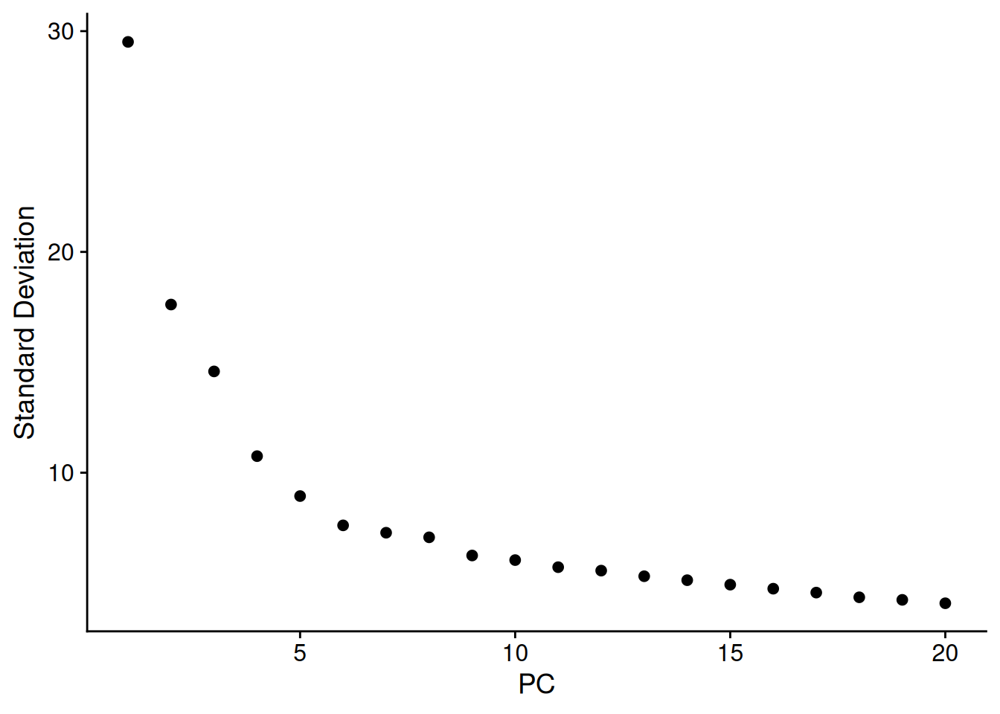
ElbowPlot(Norm_Post_QC, ndims = 50) +
scale_y_continuous(breaks = seq(0, 50, by = 2))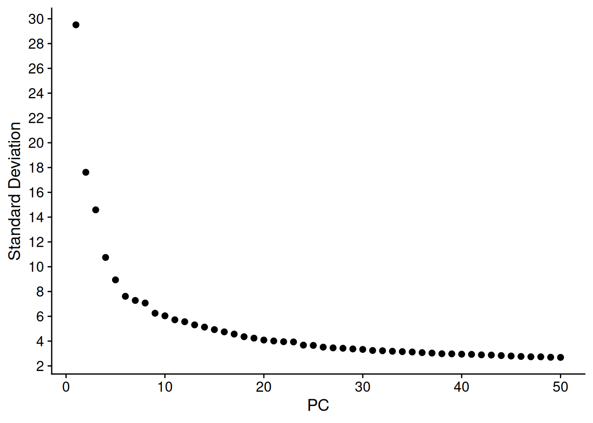
pre-Harmony UMAP
set.seed(126)
#before integration
# pre-Harmony UMAP
Norm_Post_QC <- RunUMAP(
Norm_Post_QC,
reduction = "pca",
dims = 1:40,
reduction.name = "umap.pca"
)Warning: The default method for RunUMAP has changed from calling Python UMAP via reticulate to the R-native UWOT using the cosine metric
To use Python UMAP via reticulate, set umap.method to 'umap-learn' and metric to 'correlation'
This message will be shown once per session16:07:04 UMAP embedding parameters a = 0.9922 b = 1.11216:07:04 Read 37614 rows and found 40 numeric columns16:07:04 Using Annoy for neighbor search, n_neighbors = 3016:07:04 Building Annoy index with metric = cosine, n_trees = 500% 10 20 30 40 50 60 70 80 90 100%[----|----|----|----|----|----|----|----|----|----|**************************************************|
16:07:09 Writing NN index file to temp file /tmp/Rtmpri2Ehj/file235d55522de6b
16:07:09 Searching Annoy index using 1 thread, search_k = 3000
16:07:24 Annoy recall = 100%
16:07:25 Commencing smooth kNN distance calibration using 1 thread with target n_neighbors = 30
16:07:28 Initializing from normalized Laplacian + noise (using RSpectra)
16:07:28 Commencing optimization for 200 epochs, with 1627260 positive edges
16:07:28 Using rng type: pcg
16:07:44 Optimization finishedDimPlot(Norm_Post_QC, reduction = "umap.pca", group.by = "sample")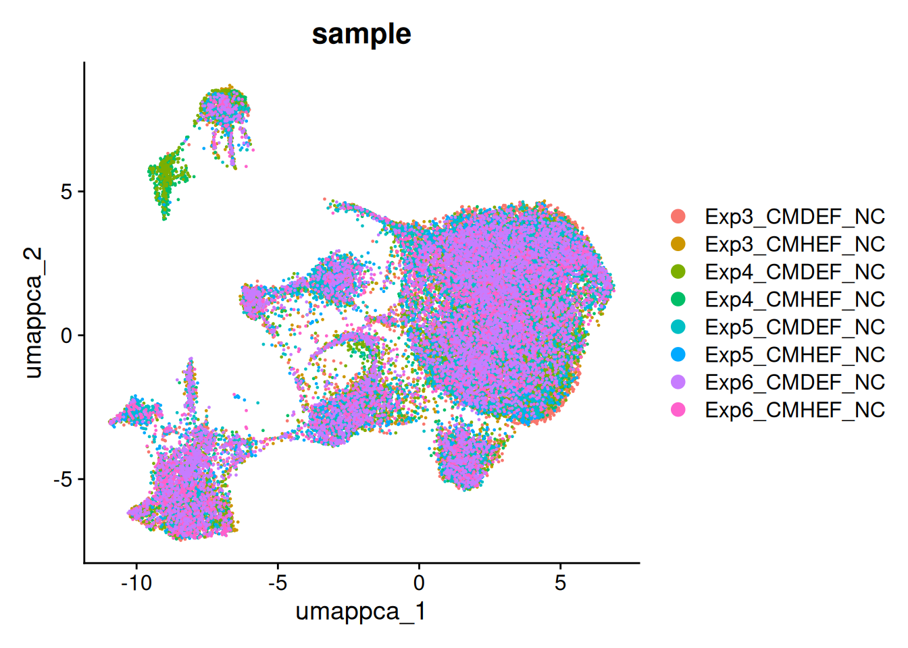
DimPlot(Norm_Post_QC, reduction = "umap.pca", group.by = "condition")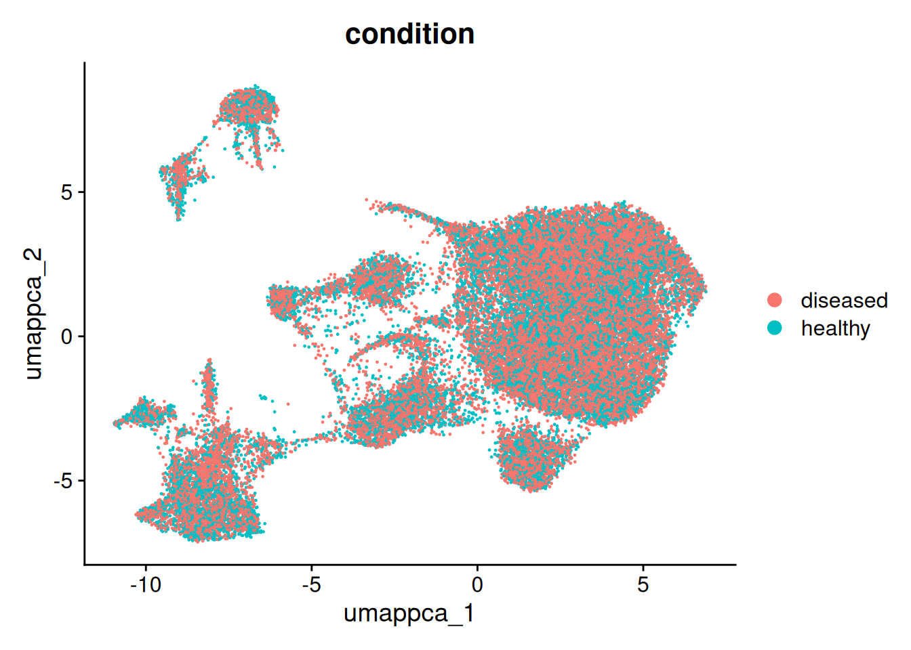
# post-Harmony UMAP#do harmony and after harmony umap
set.seed(127)
Norm_Post_QC <- RunHarmony(
object = Norm_Post_QC,
group.by.vars = "sample",
reduction.use = "pca",
dims.use=1:40,
plot_convergence = TRUE
)Transposing data matrixUsing automatic lambda estimationThetas: 2Initializing state using k-means centroids initializationInitializing centroidsHarmony 1/10Harmony converged after 1 iterations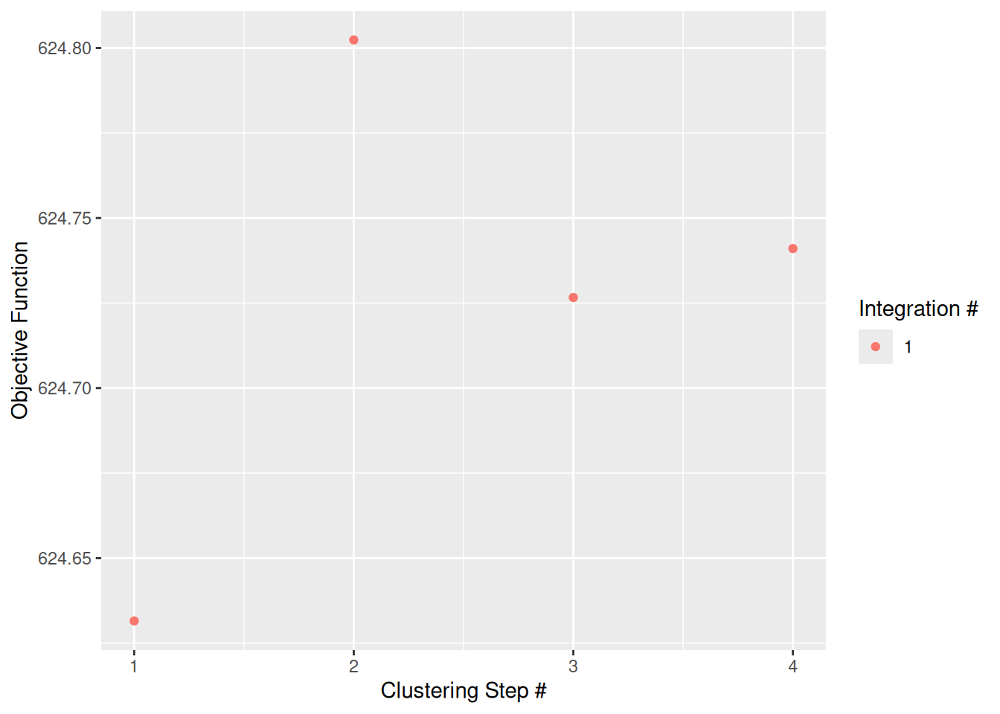
# post-Harmony UMAP
Norm_Post_QC <- RunUMAP(
Norm_Post_QC,
reduction = "harmony",
dims = 1:40,
reduction.name = "umap.harmony"
)16:07:50 UMAP embedding parameters a = 0.9922 b = 1.11216:07:50 Read 37614 rows and found 40 numeric columns16:07:50 Using Annoy for neighbor search, n_neighbors = 3016:07:50 Building Annoy index with metric = cosine, n_trees = 500% 10 20 30 40 50 60 70 80 90 100%[----|----|----|----|----|----|----|----|----|----|**************************************************|
16:07:55 Writing NN index file to temp file /tmp/Rtmpri2Ehj/file235d53a1ec3e8
16:07:55 Searching Annoy index using 1 thread, search_k = 3000
16:08:10 Annoy recall = 100%
16:08:11 Commencing smooth kNN distance calibration using 1 thread with target n_neighbors = 30
16:08:13 Initializing from normalized Laplacian + noise (using RSpectra)
16:08:14 Commencing optimization for 200 epochs, with 1626228 positive edges
16:08:14 Using rng type: pcg
16:08:30 Optimization finishedDimPlot(Norm_Post_QC, reduction = "umap.harmony", group.by = "sample")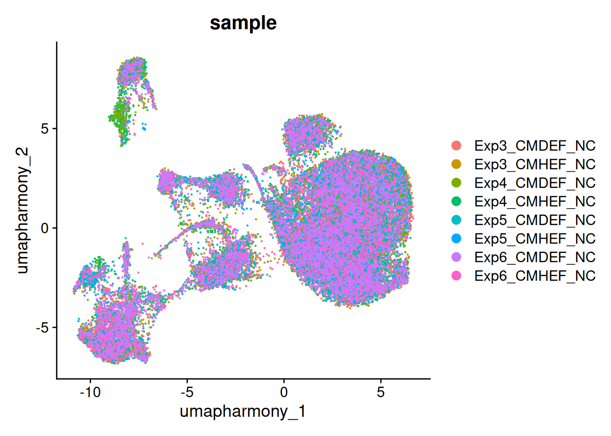
DimPlot(Norm_Post_QC, reduction = "umap.harmony", group.by = "condition")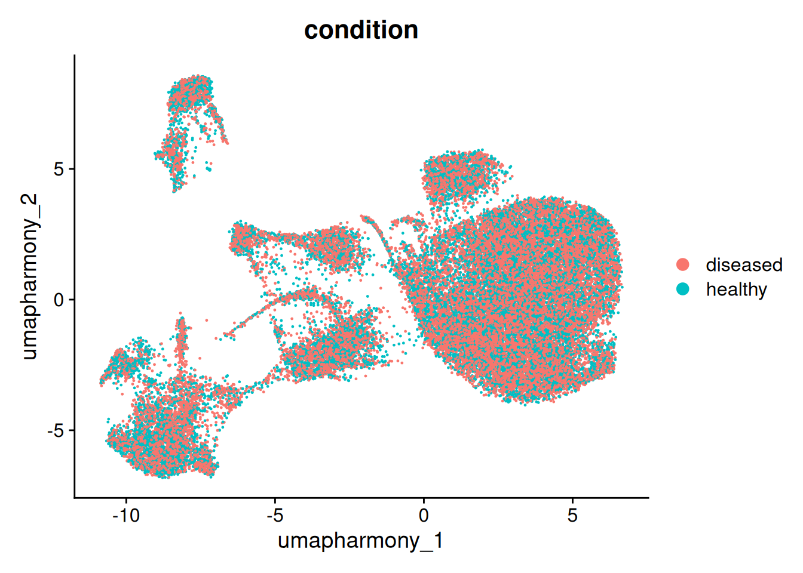
Clustree
set.seed(128)
# clustering on Harmony
Norm_Post_QC <- FindNeighbors(
Norm_Post_QC,
reduction = "harmony",
dims = 1:40
)Computing nearest neighbor graphComputing SNN#figure out which resolution I want/need
Norm_Post_QC <- FindClusters(Norm_Post_QC, resolution = seq(0.1, 0.8, by=0.1))Modularity Optimizer version 1.3.0 by Ludo Waltman and Nees Jan van Eck
Number of nodes: 37614
Number of edges: 1189525
Running Louvain algorithm...
Maximum modularity in 10 random starts: 0.9535
Number of communities: 7
Elapsed time: 9 seconds
Modularity Optimizer version 1.3.0 by Ludo Waltman and Nees Jan van Eck
Number of nodes: 37614
Number of edges: 1189525
Running Louvain algorithm...
Maximum modularity in 10 random starts: 0.9227
Number of communities: 9
Elapsed time: 9 seconds
Modularity Optimizer version 1.3.0 by Ludo Waltman and Nees Jan van Eck
Number of nodes: 37614
Number of edges: 1189525
Running Louvain algorithm...
Maximum modularity in 10 random starts: 0.9067
Number of communities: 11
Elapsed time: 10 seconds
Modularity Optimizer version 1.3.0 by Ludo Waltman and Nees Jan van Eck
Number of nodes: 37614
Number of edges: 1189525
Running Louvain algorithm...
Maximum modularity in 10 random starts: 0.8904
Number of communities: 13
Elapsed time: 9 seconds
Modularity Optimizer version 1.3.0 by Ludo Waltman and Nees Jan van Eck
Number of nodes: 37614
Number of edges: 1189525
Running Louvain algorithm...
Maximum modularity in 10 random starts: 0.8752
Number of communities: 14
Elapsed time: 10 seconds
Modularity Optimizer version 1.3.0 by Ludo Waltman and Nees Jan van Eck
Number of nodes: 37614
Number of edges: 1189525
Running Louvain algorithm...
Maximum modularity in 10 random starts: 0.8632
Number of communities: 15
Elapsed time: 9 seconds
Modularity Optimizer version 1.3.0 by Ludo Waltman and Nees Jan van Eck
Number of nodes: 37614
Number of edges: 1189525
Running Louvain algorithm...
Maximum modularity in 10 random starts: 0.8537
Number of communities: 17
Elapsed time: 8 seconds
Modularity Optimizer version 1.3.0 by Ludo Waltman and Nees Jan van Eck
Number of nodes: 37614
Number of edges: 1189525
Running Louvain algorithm...
Maximum modularity in 10 random starts: 0.8461
Number of communities: 19
Elapsed time: 9 secondsclustree::clustree(Norm_Post_QC@meta.data[,grep("SCT_snn_res", colnames(Norm_Post_QC@meta.data))],
prefix = "SCT_snn_res.")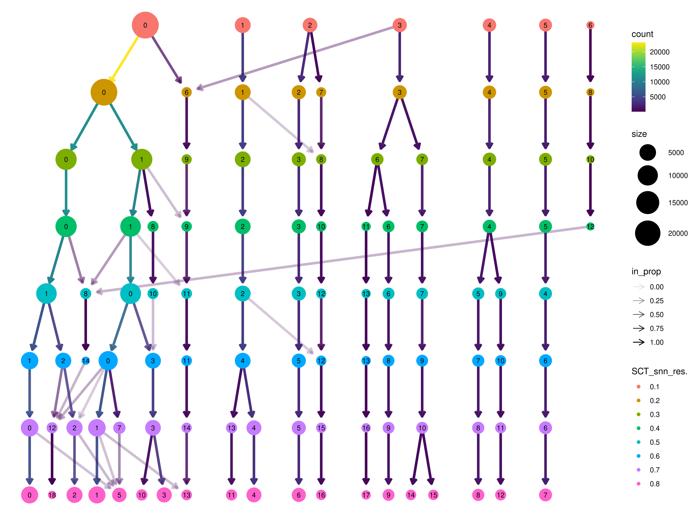
Chose a resolution for UMAP
set.seed(129)
Norm_Post_QC_0.3 <- FindClusters(
Norm_Post_QC,
resolution = 0.3
)Modularity Optimizer version 1.3.0 by Ludo Waltman and Nees Jan van Eck
Number of nodes: 37614
Number of edges: 1189525
Running Louvain algorithm...
Maximum modularity in 10 random starts: 0.9067
Number of communities: 11
Elapsed time: 10 secondsUMAP Resolution 0.3
set.seed(130)
#umap, dim 1.40 and resolution 0.3
DimPlot(
Norm_Post_QC_0.3,
reduction = "umap.harmony",
group.by = "seurat_clusters",
label = TRUE,
repel = TRUE
)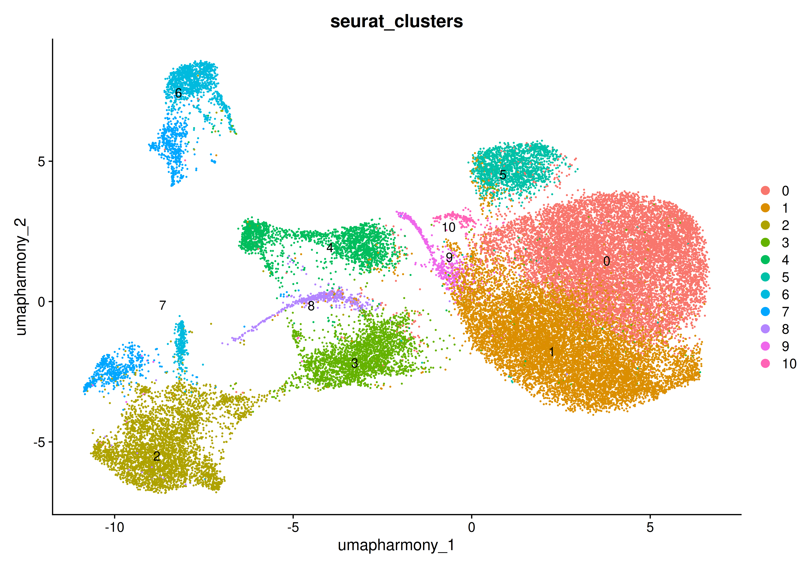
QC on Clusters 0.3
VlnPlot(Norm_Post_QC_0.3, features = c("nCount_RNA", "nFeature_RNA", "percent.mt", "percent.rp", "scDblFinder.score"), ncol = 2, pt.size = 0) + theme(axis.title.x = element_blank())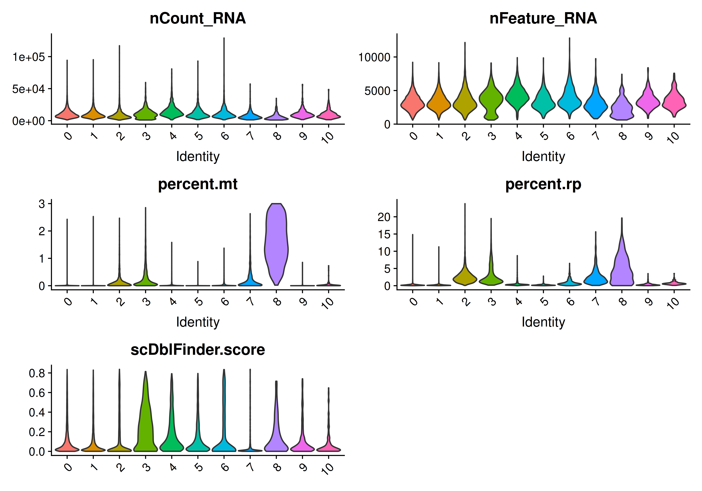
# Canonical Markers 0.3canonical_markers <- c(
"TNNT2", "ACTC1", "MYH6", "MYH7", "TNNI3", "RYR2", "PLN",
"DCN", "LUM", "COL1A1", "COL1A2", "FBLN1", "COL3A1",
"PECAM1", "CDH5", "KDR", "EMCN", "VWF", "EGFL7", "FLT1"
)
DotPlot(Norm_Post_QC_0.3, features = canonical_markers) + RotatedAxis()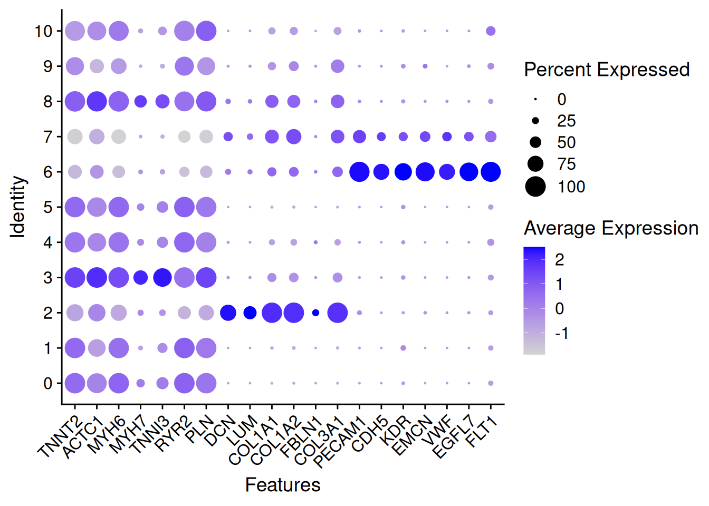
Export Seurat Object
# Create the output folder if it does not already exist
dir.create(
here::here("output"),
showWarnings = FALSE,
recursive = TRUE
)
# Save the complete initial clustered object
saveRDS(
Norm_Post_QC_0.3,
file = here::here(
"output",
"snRNAseq_initial_QC_and_Clustering.rds"
)
)
#Check that it saved correctly
checkpoint_path <- here::here(
"output",
"snRNAseq_initial_clustered_before_iterative_QC.rds"
)
file.exists(checkpoint_path)[1] FALSEfile.info(checkpoint_path)$size / 1024^3[1] NAConclusion
So we have problematic clusters: cluster number 3 (CM) has a high scDblFinder score. Cluster 9 has high percentages of mitochondrial genes and ribosomal proteins (CM), it also has relatively low features and counts. Cluster 7 has low features and counts and is positve for ECs and fibroblasts. At this point I will save the Seurat Object, do further checks on the three problematic clusters, possibly remove some and redo QC.
sessionInfo()R version 4.5.2 (2025-10-31)
Platform: x86_64-pc-linux-gnu
Running under: Ubuntu 24.04.3 LTS
Matrix products: default
BLAS: /usr/lib/x86_64-linux-gnu/openblas-pthread/libblas.so.3
LAPACK: /usr/lib/x86_64-linux-gnu/openblas-pthread/libopenblasp-r0.3.26.so; LAPACK version 3.12.0
locale:
[1] LC_CTYPE=en_US.UTF-8 LC_NUMERIC=C
[3] LC_TIME=en_US.UTF-8 LC_COLLATE=en_US.UTF-8
[5] LC_MONETARY=en_US.UTF-8 LC_MESSAGES=en_US.UTF-8
[7] LC_PAPER=en_US.UTF-8 LC_NAME=C
[9] LC_ADDRESS=C LC_TELEPHONE=C
[11] LC_MEASUREMENT=en_US.UTF-8 LC_IDENTIFICATION=C
time zone: Etc/UTC
tzcode source: system (glibc)
attached base packages:
[1] stats4 stats graphics grDevices datasets utils methods
[8] base
other attached packages:
[1] future_1.70.0 presto_1.0.0
[3] data.table_1.18.4 clustree_0.5.1
[5] ggraph_2.2.2 harmony_2.0.5
[7] Rcpp_1.1.2 scCustomize_3.3.0
[9] sctransform_0.4.3 Seurat_5.5.1
[11] SeuratObject_5.4.0 sp_2.2-1
[13] here_1.0.2 rhdf5_2.54.1
[15] scDblFinder_1.24.10 SingleCellExperiment_1.32.0
[17] SummarizedExperiment_1.40.0 Biobase_2.70.0
[19] GenomicRanges_1.62.1 Seqinfo_1.0.0
[21] IRanges_2.44.0 S4Vectors_0.48.1
[23] BiocGenerics_0.56.0 generics_0.1.4
[25] MatrixGenerics_1.22.0 matrixStats_1.5.0
[27] limma_3.66.0 gridExtra_2.3.1
[29] UpSetR_1.4.1 RColorBrewer_1.1-3
[31] pheatmap_1.0.13 lubridate_1.9.5
[33] forcats_1.0.1 stringr_1.6.0
[35] dplyr_1.2.1 purrr_1.2.2
[37] readr_2.2.0 tidyr_1.3.2
[39] tibble_3.3.1 ggplot2_4.0.3
[41] tidyverse_2.0.0 broom_1.0.13
[43] MuMIn_1.48.19 MASS_7.3-66
[45] workflowr_1.7.2
loaded via a namespace (and not attached):
[1] fs_2.1.0 spatstat.sparse_3.2-0
[3] bitops_1.0-9 httr_1.4.8
[5] tools_4.5.2 backports_1.5.1
[7] R6_2.6.1 uwot_0.2.4
[9] lazyeval_0.2.3 rhdf5filters_1.22.0
[11] withr_3.0.3 progressr_1.0.0
[13] cli_3.6.6 spatstat.explore_3.8-1
[15] fastDummies_1.7.6 labeling_0.4.3
[17] sass_0.4.10 S7_0.2.2
[19] spatstat.data_3.1-9 ggridges_0.5.7
[21] pbapply_1.7-4 Rsamtools_2.26.0
[23] scater_1.38.1 parallelly_1.48.0
[25] mcprogress_0.1.1 rstudioapi_0.19.0
[27] shape_1.4.6.1 BiocIO_1.20.0
[29] spatstat.random_3.5-0 ica_1.0-3
[31] Matrix_1.7-4 ggbeeswarm_0.7.3
[33] abind_1.4-8 lifecycle_1.0.5
[35] whisker_0.4.1 yaml_2.3.12
[37] edgeR_4.8.2 snakecase_0.11.1
[39] glmGamPoi_1.22.0 SparseArray_1.10.10
[41] Rtsne_0.17 paletteer_1.7.0
[43] grid_4.5.2 promises_1.5.0
[45] dqrng_0.4.1 crayon_1.5.3
[47] miniUI_0.1.2 lattice_0.22-7
[49] beachmat_2.26.0 cowplot_1.2.0
[51] cigarillo_1.0.0 pillar_1.11.1
[53] knitr_1.51 metapod_1.18.0
[55] rjson_0.2.23 xgboost_3.2.1.1
[57] future.apply_1.20.2 codetools_0.2-20
[59] glue_1.8.1 getPass_0.2-4
[61] spatstat.univar_3.2-0 vctrs_0.7.3
[63] png_0.1-9 spam_2.11-4
[65] gtable_0.3.6 rematch2_2.1.2
[67] cachem_1.1.0 xfun_0.60
[69] S4Arrays_1.10.1 mime_0.13
[71] tidygraph_1.3.1 survival_3.8-3
[73] statmod_1.5.2 bluster_1.20.0
[75] fitdistrplus_1.2-6 ROCR_1.0-12
[77] nlme_3.1-168 bit64_4.8.2
[79] RcppAnnoy_0.0.23 GenomeInfoDb_1.46.2
[81] rprojroot_2.1.1 bslib_0.11.0
[83] irlba_2.3.7 vipor_0.4.7
[85] KernSmooth_2.23-26 otel_0.2.0
[87] colorspace_2.1-3 ggrastr_1.0.2
[89] tidyselect_1.2.1 processx_3.9.0
[91] bit_4.6.0 compiler_4.5.2
[93] curl_7.1.0 git2r_0.36.2
[95] BiocNeighbors_2.4.0 hdf5r_1.3.12
[97] DelayedArray_0.36.1 plotly_4.12.0
[99] rtracklayer_1.70.1 checkmate_2.3.4
[101] scales_1.4.0 lmtest_0.9-40
[103] callr_3.8.0 goftest_1.2-3
[105] digest_0.6.39 spatstat.utils_3.2-4
[107] rmarkdown_2.31 RhpcBLASctl_0.23-42
[109] XVector_0.50.0 htmltools_0.5.9
[111] pkgconfig_2.0.3 sparseMatrixStats_1.22.0
[113] fastmap_1.2.0 GlobalOptions_0.1.4
[115] rlang_1.3.0 htmlwidgets_1.6.4
[117] UCSC.utils_1.6.1 DelayedMatrixStats_1.32.0
[119] shiny_1.14.0 farver_2.1.2
[121] jquerylib_0.1.4 zoo_1.8-15
[123] jsonlite_2.0.0 BiocParallel_1.44.0
[125] BiocSingular_1.26.1 RCurl_1.98-1.19
[127] magrittr_2.0.5 scuttle_1.20.0
[129] dotCall64_1.2 patchwork_1.3.2
[131] Rhdf5lib_1.32.0 viridis_0.6.5
[133] reticulate_1.46.0 stringi_1.8.7
[135] plyr_1.8.9 parallel_4.5.2
[137] listenv_1.0.0 ggrepel_0.9.8
[139] deldir_2.0-4 graphlayouts_1.2.4
[141] Biostrings_2.78.0 splines_4.5.2
[143] tensor_1.5.1 circlize_0.4.18
[145] hms_1.1.4 locfit_1.5-9.12
[147] ps_1.9.3 igraph_2.3.3
[149] spatstat.geom_3.8-1 RcppHNSW_0.7.0
[151] reshape2_1.4.5 ScaledMatrix_1.18.0
[153] XML_3.99-0.23 evaluate_1.0.5
[155] scran_1.38.1 renv_1.2.3
[157] ggprism_1.0.7 tweenr_2.0.3
[159] tzdb_0.5.0 httpuv_1.6.17
[161] polyclip_1.10-7 RANN_2.6.2
[163] scattermore_1.2 ggforce_0.5.0
[165] janitor_2.2.1 rsvd_1.0.5
[167] xtable_1.8-8 restfulr_0.0.17
[169] RSpectra_0.16-2 later_1.4.8
[171] viridisLite_0.4.3 memoise_2.0.1
[173] beeswarm_0.4.0 GenomicAlignments_1.46.0
[175] cluster_2.1.8.1 timechange_0.4.0
[177] globals_0.19.1